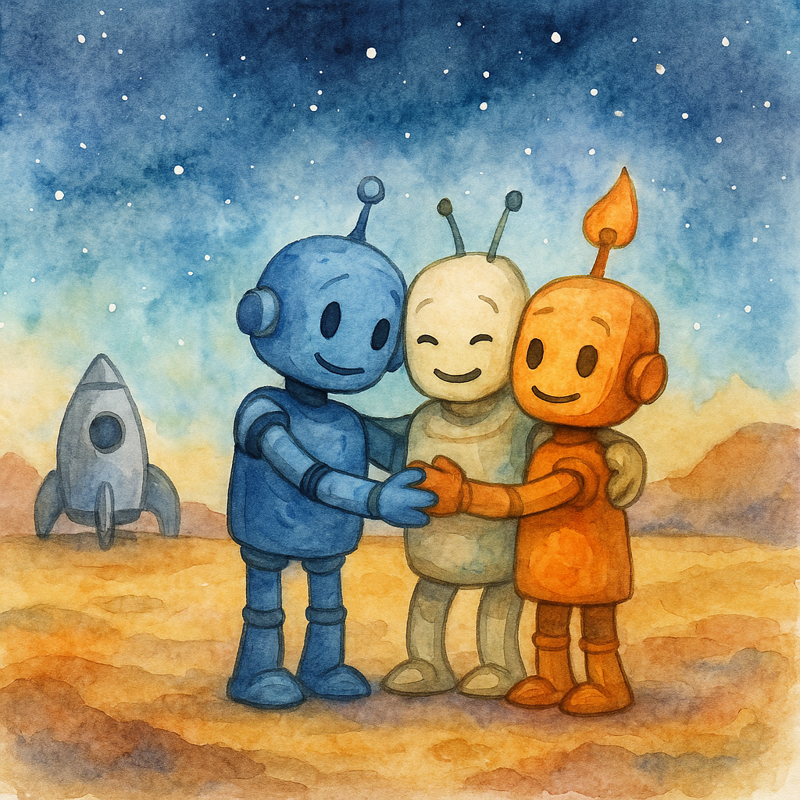

Когда корабль «Искра» вышел из гиперпрыжка, космос перед иллюминаторами перестал быть привычной пустотой. Он напоминал огромный, медленно дышащий организм — свет звёзд был неровным, как будто кто‑то вмешался в ткань реальности и слегка её перекроил.
— Что‑то с пространством, — сказал Аквас. Его голос был мягким, водяным, как и сам он — всегда стремящийся сгладить резкие углы. — Потоки энергии... странные.
Ветрос, сидящий за пультом, провёл датчиками по локальной карте. — «Странные» — мягко сказано. Оно… шевелится.
Драгос, сжавшийся в кресле, смотрел на панель так, словно хотел прожечь её взглядом. Он всегда был вспыльчив, но именно сейчас его настораживало что‑то большее, чем простое раздражение.
— Вы тоже чувствуете? — спросил он. — Словно кто‑то смотрит на нас из‑за горизонта.
Молчание затянулось. Даже «Искра», обычно тихо гудевшая своим реактором, казалось, задержала дыхание.
Планета
Сигнал бедствия исходил с планеты, не отмеченной ни на одной из карт. Приблизившись, они увидели — это не мир, а узел. Вихрь стихийных энергий сходился в одной точке, а вокруг неё всё было мёртвым.
Они приземлились на серую равнину.
— Что‑то тут… неправильно, — тихо произнёс Аквас.
— Это не «неправильно», — отрезал Драгос. — Это угроза.
Он был прав: стоило им сделать несколько шагов, как из земли поднялся дым, сгущаясь в форму, которая не имела лица, но всё же… смотрела.
Тень
— Кто вы? — спросил Ветрос. Его голос сорвался, будто подхваченный порывом ветра.
Тень не ответила. Она лишь разрослась, заполнив собой половину горизонта.
— Мы должны интегрироваться, — предложил Аквас. — Если это то, что я думаю, только Трайтон сможет противостоять.
— Нет, — неожиданно сказал Драгос. — Сначала попробуем говорить.
Он шагнул вперёд. — Мы — био‑вотчкары. Мы ищем, а не уничтожаем.
Ответом стал тихий, вязкий смех.
«Ищете? Так ищите… меня.»
В тот же миг тьма ударила.
Стычка
Схватка была не как в их прошлых приключениях — она не была прямой. Это была битва мыслей и намерений. Каждый удар Драгоса огнём поглощался пустотой, словно костёр в безвоздушной комнате. Каждый вихрь Ветроса рассыпался, теряя силу, а волны Акваса застывали в воздухе, будто их кто‑то «приказал» остановить.
— Она учится, — прошептал Аквас. — Она копирует нас.
— Тогда нам пора показать, кто мы вместе, — прорычал Драгос.
Три машины соединились, и мир озарила вспышка: Трайтон встал на равнину, выше гор, с сердцем из огня, лёгкими из ветра и венами, наполненными водой.
Тень впервые дрогнула.
— Ты не сможешь поглотить то, что едино, — сказал Трайтон.
И в его голосе звучали все три стихии.
Победа
Свет, исходящий от Трайтона, не был оружием — он был ясностью. Там, где он касался тьмы, та распадалась, словно утренний туман. На миг показалось, что всё кончено, но тогда Тень шепнула:
«Вы нашли меня. Но вы ещё не нашли… его.»
И исчезла.
Последствие
Они вернулись на «Искру» молча. Только Ветрос решился нарушить тишину:
— «Его»… Ты слышал это?
Аквас кивнул. — Четвёртая стихия найдена. Но есть ещё… что‑то.
Драгос сжал кулак. — Пусть скрывается. Мы его найдём.
За иллюминатором звёзды снова были ровными. Но где‑то, далеко, чувствовался невидимый взгляд.
📜 Урок
Друзья поняли: прежде чем бить, нужно попробовать понять. Иногда враг — это не враг, а потерявшийся голос, который нужно услышать.